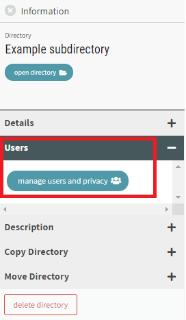

# Finding and Editing
Directories can be used to orgranize competency frameworks and resources into collections. A directory can contain subdirectories, frameworks, and resources. Items can be copied or moved into and out of directories.
# Navigating to a Directory
Directories that you have created or you have access to can be viewed by clicking on a Directory icon on the left side bar highlighted by the red box in the image below. If you have access to multiple directories, then you will see multiple directory icons (one for each created directory).
Click on a Directory icon to open the directory. Once opened, you will see the contents of the selected directory. If the directory does not show any items listed then it is empty.
# Navigating with the Directory Path
The path for the selected directory is located in the breadcrumb navigation directly above the contents of the directory.
Click on a directory or subdirectory name in the path to show items within that directory or subdirectory. If the directory does not show any items listed then it is empty.
Click on "CaSS" in the breadcrumb navigation to show all available items. This list includes all directories, subdirectories, frameworks, and resources within public directories, directories that you have created, and any other directories that you have access to.
# Navigating to a Directory from a Framework
If a framework exists within a directory, then a link to its parent directory is available when viewing the framework. To view the directory that a framework is in, click on "go to directory" in the top right corner as outlined in red below.
# Opening an Item
Double-click on any item within a directory (including another directory) to open that item.
Opening a Directory will show the contents of the directory.
Opening a Framework will show the framework. This navigates away from the Directory page.
Opening a Resource will open the URL of the resource in your browser.
# Viewing an Item in More Detail
Single-click on any item name within a directory (including another directory) to view an Information panel with more details and options for that item.
The Information about the item will show on a side panel to the right of the directory list.
The type of item (Directory, Framework, or Resource) along with the item name is shown in the top section of the Information panel. The type of item being viewed and its properties determines the contents available within the information panel.
If the type of item is a Competency, then the details and options within the Information panel will refer to the Framework that the Competency is within.
If the item is not currently open, then a button providing the option to open that item is available under the name of the item.
Not all options listed below are available on all items.
Details (only available for directories and frameworks)
- Last Modified - The date that this item was last modified
- Date Created - The original date that this item was created. If this item has been copied from another location, then the date created will reflect the date that the copy was created
- Subdirectories - The number of subdirectories that this directory contains (only available for directories)
- Objects - The number of frameworks and resources that this directory contains (only available for directories)
- Parent Directory - A link to navigate to the parent of this directory (only available for subdirectories)
- Share - Click on "copy link" and the link to this item will be copied to your clipboard

Users - Click on "manage users and privacy" and a window dialogue will allow you to view and control access to this item.

Properties - Available properties on this item, including name and URL (if a resource). Includes option to edit properties if editable
Description - A description for the item if one has been provided
Copy - Includes a list of available directories that this item can be copied to
Move - Includes a list of available directories that this item can be moved to
Delete directory - Click on the "delete directory" button to delete the currently selected directory. You will need to type in the name of the directory when prompted in order to avoid accidental deletion.
Important Note: This action is not reversable. Deleting this directory will delete all of its contents and make it unavailble to others who might be using it.
# Searching for Items from the Directory View
Use the search bar at the top of the page to type in a search term and then press ENTER.
Items that contain the search term and are within the currently open directory (and its subdirectories) will be listed under Available Items. This included Directories, Frameworks, Resources, and Competencies within Frameworks.
You can sort and filter the list of items by clicking the filter button next to the search bar. The button next to it clears any filters you’ve applied.

The filter button will open up a side panel to the right of the Available items with options to sort, filter, and apply your search term to various fields.

# Making Changes to Directories
You can only make changes to a directory if you are an owner (listed as Admin) for the directory. To confirm that you can edit a directory, click on "CaSS" in the breadcrumb navigation to show all available items. If the directory has the label "Editable" beneath it, then you can make changes to it.
# Creating a New Directory
To create a new directory (not a subdirectory), click on the "create new" button in the left menu under your login and select Directory from the dropdown. A field appears for you to enter in the name of the new directory. Enter in the name and click "create". A new directory is created and the Directory Path is updated to reflect the location of the new directory.
# Editing Properties of a Directory
To rename a directory or edit other properties, open the directory and click on the name of the directory in the Dirctory Path to show its Information on the right side panel. Within the Information panel, click on "Properties" and click "edit". A dialogue window opens with the name and properties of the directory. Make the desired changes to the directory and click "save".
# Adding Items
You can only add items to a directory if you are an owner (listed as Admin) for the directory.
To add an item to a directory, open the directory and click on the "add new" button in the top right corner of the page to add new items to the current directory. A directory can contain Subdirectories, Frameworks, and Resources.
# Adding a New Framework
To create a new Framework within the current Directory, click on add "Framework" in the dropdown menu. A dialogue window opens to create and add properties to a new Framework. Click "Done" when finished and your framework will be created and opened. Click 'go to directory' at the top of the page to return to the parent directory where the framework has been created. You will see your new framework in the list of directory contents.
# Adding a New Subdirectory
To create a new Subdirectory, click on "Sub directory" in the dropdown menu. A dialogue window opens to create a new directory. Enter the name of the new directory and click "create".
A new subdirectory is created and the Directory Path is updated to reflect the location of the new directory.
# Adding a New Resource
To create a new Resource, click on "Resource" in the dropdown menu. A dialogue window opens to create a new resource. Enter the name of the new resource and the URL of the resource and click "create".
A new resource is created and the contents of the Directory is updated to relfect the additional resource.
# Making Changes to Items
You can only make changes to an item if you are an owner (listed as Admin) for the item.
# Editing Properties of a Resource
To rename an item or edit other properties, click on the item in the list of directory contents to show its Information on the right side panel. Within the Information panel, click on "Properties" and click "edit". A dialogue window opens with the name and properties of the item. Make the desired changes to the item and click "save".
# Copying Items
To create a copy of an item in a directory, click on the name of the item to be copied to show its Information on the right side panel. Within the Information panel, expand the "Copy" section. Each available directory that the currently selected item can be copied into is listed with a corresponding button. Click on the "copy here" button to make a copy of the item into that directory. The name of the new copy will be prepended with "Copy of ". A progress bar at the top of the main window will move from left to right to indicate the progress of the copy.
The copy of the item will be in the new directory. The original item will remain in its original location.
# Moving Items
You can only move items to a directory if you are an owner (listed as Admin) for the directory and for the item to be moved.
To move an item to a directory, click on the name of the item to be moved to show its Information on the right side panel. Within the Information panel, expand the "Move" section. Each available directory that the currently selected item can be moved to is listed with a corresponding button. Click on the "move here" button to move the item into that directory. A progress bar at the top of the main window will move from left to right to indicate the progress of the move.
The item will now be in the new directory location only.
# Remove Item from Directory
You can only remove items from a directory if you are an owner (listed as Admin) for the directory and for the item to be removed.
To remove an item from a directory, click on the name of the item to be removed to show its Information on the right side panel. Within the Information panel, expand the "Move" section. At the bottom of the list of directories in the "Move" section is an option to remove the item from the current directory its location in. Click on the link to "Remove from directory". A progress bar at the top of the main window will move from left to right to indicate the progress of the removal.
The item will no longer reside in the directory.
# Deleting a Directory
You can only delete a directory if you are an owner (listed as Admin) for the directory.
To delete a directory, click on the name of the directory to be deleted to show its Information on the right side panel. At the bottom of the Information panel, click on the "delete directory" button to delete the currently selected directory. You will need to type in the name of the directory when prompted in order to avoid accidental deletion.
Important Note: This action is not reversable. Deleting this directory will delete all of its contents and make it unavailble to others who might be using it.